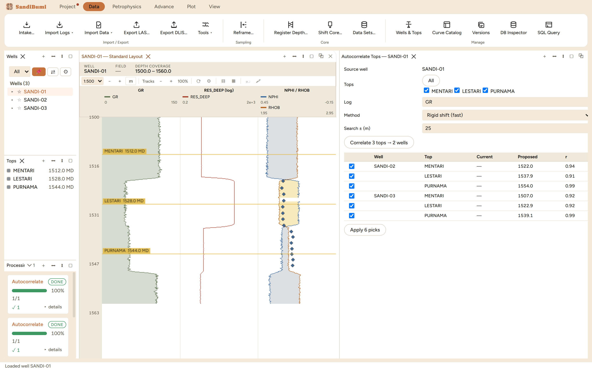

Formation tops are the skeleton every zoned answer hangs on: zones are
built from them, zone parameters apply between them, and the pay summary
reports by them. SandiBumi takes tops three ways – a delimited file
through Data ▸ Import Tops…, picks made by hand on the
log itself, and Autocorrelate Tops…, which carries one
well's markers to the rest of the field by matching log character. Reach
for the editor when a top needs picking or nudging against the curves;
reach for autocorrelation when one well is interpreted and twenty are
not.
The pane

Three markers picked on the example source well, correlated
to the two other wells on gamma ray: six proposals at r 0.91–0.99,
each a checkbox the interpreter still owns. The staged structure
(+10 m and −5 m offsets) came back to within
0.13 m.
The Tops pane lists, the log view shows. Every top draws as a
labelled line across the log tracks at its measured depth; clicking a
top in the Tops pane selects its interval for every plot that follows
the selection.
Editing happens on the log, not in a form. The 🏷 tool
on the log view's own toolbar turns the overlay live:
Tops editing ON — click adds, drag moves, double-click edits
Autocorrelation is proposals, never writes. The pane
correlates the source well's log character around each marker against
every other well in scope and returns a table of proposed depths with
correlation coefficients – nothing lands until Apply, and
every row keeps its checkbox.
Step by step
Import or pick. Import Tops… takes a delimited file
with well, top and depth columns and routes rows by well name (the
example delivery wrote 3 tops onto 1 matched well). Or turn on the
🏷 tool and click the depth where the log breaks – the
dialog opens prefilled with the clicked depth, wanting only a name.
Adjust by dragging. With editing on, a drag moves a top live;
on the example, dragging a marker from 1528.0 to 1530.4 wrote the new
depth, and the Undo button's own tooltip named the operation ("Undo
move top LESTARI") – one click put 1528.0 back exactly.
Autocorrelate. Open Data ▸ Autocorrelate
Tops…, tick the markers to carry, pick the log (GR here)
and the search window, and press Correlate. One marker uses a rigid
shift; several use an elastic warp so the set stays jointly
consistent.
Read the r column, then Apply. Rows arrive pre-checked only
where the correlation clears 0.7; anything weaker waits for your
explicit tick.
Reading the result
The example is a controlled experiment: the two target wells carry the
same log character as the source, structurally shifted +10 m and
−5 m. Correlating all three markers at once proposed
1522.0 / 1537.9 / 1554.0 m on the deeper well and
1507.0 / 1522.9 / 1539.1 m on the shallower one
(r 0.91–0.99), and applying the six picks put every marker within
0.13 m of the staged truth. A single marker correlated alone, rigid
shift, scored r 1.00 at exactly +10.0 and −5.0 – the
difference between the two runs is the elastic warp spending a little
correlation to keep three markers mutually consistent. The Processing
History records the whole event as one line: "Autocorrelated 6 marker(s)
across 2 well(s)".
QC and pitfalls
An r of 1.00 is a property of clean synthetic logs. Field
gamma ray repeats less faithfully; read the r column as a ranking and
check the weak rows against the curves before ticking them.
The search window is a statement about structure. ±25 m
accommodated the staged ±10 m here; a window smaller than the
real structural relief cannot find the marker, and one far larger
invites a match on the wrong cycle.
Every move is undoable, including an applied proposal. The
undo history names each operation, so an overwritten pick is one
Ctrl+Z away – check the Undo tooltip before assuming a top is
lost.